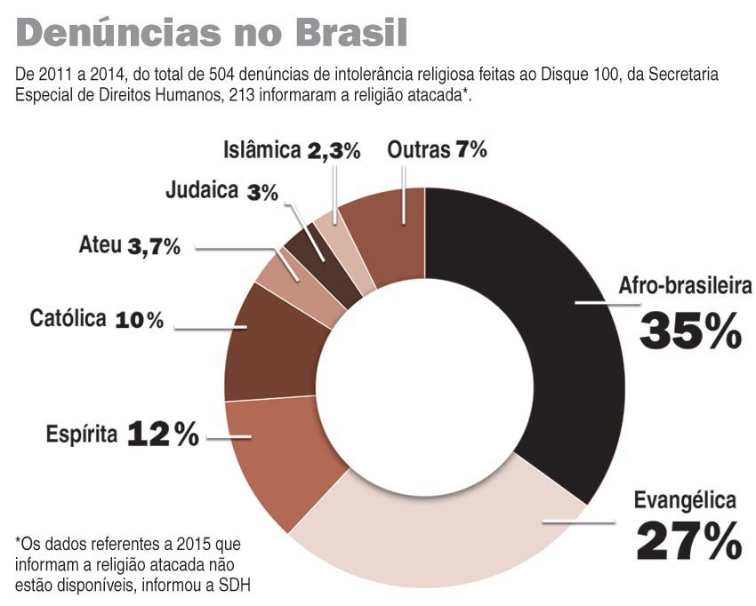
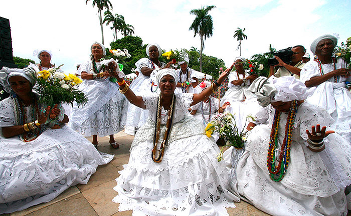

Religiões de Matriz Africana
Segundo o site do senado Brasileiro, o qual o link está localizado na parte destinada as Referências Bibliográficas, intolerância religiosa é um conjunto de ideologias e
atitudes ofensivas a crenças e práticas religiosas ou mesmo a quem não segue uma religião. É um crime de
ódio que fere a liberdade e a dignidade humana.
A liberdade de crença é uma das garantias do Estatuto da Igualdade Racial, Lei 12.288/2010. A lei protege as
religiões de matriz africana e os locais de culto. Apesar do respaldo legal, organizações dizem que há cada
vez mais casos de violação desse direito. Segundo um arquivo retirado da Agência do Brasil de 2011 a 2014,
do total das 504 denúncias, 213 informaram a religião atacada. Em 35% desses casos, trata-se de religiões de
matriz africana.
Mas o que são as religiões de Matriz Africana?
No Brasil, Religiões de matriz africana é um termo utilizado para se referir as religiões que se desenvolveram a
partir do processo vinda dos povos escravizados do continente africano, embora sejam praticadas por 0,3% da
população, de acordo com o Censo do Instituto Brasileiro de Geografia e Estatística (IBGE), as religiões de
origem africana são as que mais sofrem discriminação. De acordo com os dados do Disque Direitos Humanos, o
Disque 100, da Secretaria de Direitos Humanos da Presidência da República (SDH), de 2011 a 2014, do total de 504
denúncias, 213 informaram a religião atacada. Em 35% desses casos, trata-se de religiões de matriz africana.

Já em dados compilados pela Comissão de Combate à Intolerância Religiosa do Rio de Janeiro (CCIR) mostram que
mais de 70% de 1.014 casos de ofensas, abusos e atos violentos registrados no Estado entre 2012 e 2015 são
contra praticantes de religiões de matrizes africanas.
Mas qual o motivo ou os motivos que têm levado a ocorrência desse tipo de descriminação contra Religiões de
Matriz Africana ao longo de tantos anos através da história?
Infelizmente um dos motivos que levam as pessoas a praticar esses tipos de atitudes é as pessoas associarem não
só as religiões mas também grande parte das culturas e costumes de matriz africana a rituais satânicos como
ocorreu em em uma quarta-feira, por volta das 16h, o pai de santo Sumbunanji de Kavungo, fazia, em frente à sua
casa, no Recife, os rituais tradicionais do candomblé. Oferecia a Exu, guardião dos caminhos e das direções,
água, farofa amarela e branca e ovos. Ali começou uma série de agressões que culminaram em ameaças de morte ao
religioso. Segundo ele, duas mulheres passaram pelo local e associaram o ritual ao demônio. Nos dias seguintes,
o terreiro foi bombardeado duas vezes, e um cartaz com xingamentos foi colocado na porta.
Em entrevista ele disse "Eu perdi minha vida, minha paz, minha tranquilidade, meu conforto, meu porto seguro. A
residência é um local sagrado, é um espaço onde estou todos os dias. Perdi minha liberdade de ir e vir, vivo
aflito, oprimido e perturbado com essa situação", Os ataques começaram há um mês e hoje, com medo de novas
agressões, ele deixou o local e está na casa de parentes.
Recentemente a BBC Brasil ouviu especialistas sobre as razões da hostilidade contra as religiões de origem
africana e o que pode ser feito, para eles, há duas explicações. Por um lado o racismo e a discriminação que
remontam à escravidão e que desde o Brasil colônia rotulam tais religiões pelo simples fato de serem de origem
africana, e, pelo outro, a ação de movimentos neopentecostais que nos últimos anos teriam se valido de mitos e
preconceitos para "demonizar" e insuflar a perseguição a umbandistas e candomblecistas.

Acima a fala em tom ameaçador de um ex-presidente que como podem ver, se refere a figuras religiosas.

A imagem acima mostra um exemplo de Religião de Matriz Africana.